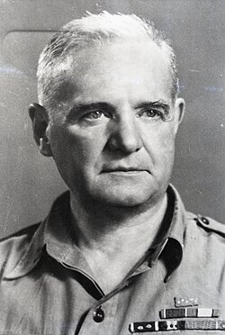

William Donovan
Founder of the OSS, 1883 to 1959

A World War I Medal of Honor recipient and New York lawyer whom President Roosevelt chose to lead U.S. intelligence. He headed the OSS from 1942 to 1945 and is often called the father of American intelligence. 1
Open in the interactive Watcher
Related
- OSS Led the OSS
- British Security Coordination Worked with William Stephenson
Sources
- William J. Donovan Wikipedia